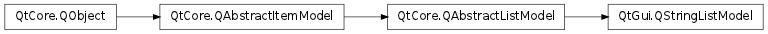

QStringListModel ¶

Inherited by: QHelpIndexModel
Synopsis ¶
Functions ¶
- def setStringList (strings)
- def stringList ()
Detailed Description ¶
The PySide.QtGui.QStringListModel class provides a model that supplies strings to views.
PySide.QtGui.QStringListModel is an editable model that can be used for simple cases where you need to display a number of strings in a view widget, such as a PySide.QtGui.QListView or a PySide.QtGui.QComboBox .
The model provides all the standard functions of an editable model, representing the data in the string list as a model with one column and a number of rows equal to the number of items in the list.
Model indexes corresponding to items are obtained with the PySide.QtCore.QAbstractListModel.index() function, and item flags are obtained with PySide.QtGui.QStringListModel.flags() . Item data is read with the PySide.QtGui.QStringListModel.data() function and written with PySide.QtGui.QStringListModel.setData() . The number of rows (and number of items in the string list) can be found with the PySide.QtGui.QStringListModel.rowCount() function.
The model can be constructed with an existing string list, or strings can be set later with the PySide.QtGui.QStringListModel.setStringList() convenience function. Strings can also be inserted in the usual way with the PySide.QtGui.QStringListModel.insertRows() function, and removed with PySide.QtGui.QStringListModel.removeRows() . The contents of the string list can be retrieved with the PySide.QtGui.QStringListModel.stringList() convenience function.
An example usage of PySide.QtGui.QStringListModel :
model = QStringListModel () list = QStringList () list . append ( "a" ) list . append ( "b" ) list . append ( "c" ) model . setStringList ( list )See also
PySide.QtCore.QAbstractListModel PySide.QtCore.QAbstractItemModel Model Classes
- class PySide.QtGui. QStringListModel ( [ parent=None ] ) ¶
- class PySide.QtGui. QStringListModel ( strings [ , parent=None ] )
-
Parameters: - parent – PySide.QtCore.QObject
- strings – list of strings
Constructs a string list model with the given parent .
Constructs a string list model containing the specified strings with the given parent .
- PySide.QtGui.QStringListModel. setStringList ( strings ) ¶
-
Parameters: strings – list of strings Sets the model’s internal string list to strings . The model will notify any attached views that its underlying data has changed.
See also
PySide.QtGui.QStringListModel.stringList() PySide.QtCore.QAbstractItemModel.dataChanged()
- PySide.QtGui.QStringListModel. stringList ( ) ¶
-
Return type: list of strings Returns the string list used by the model to store data.